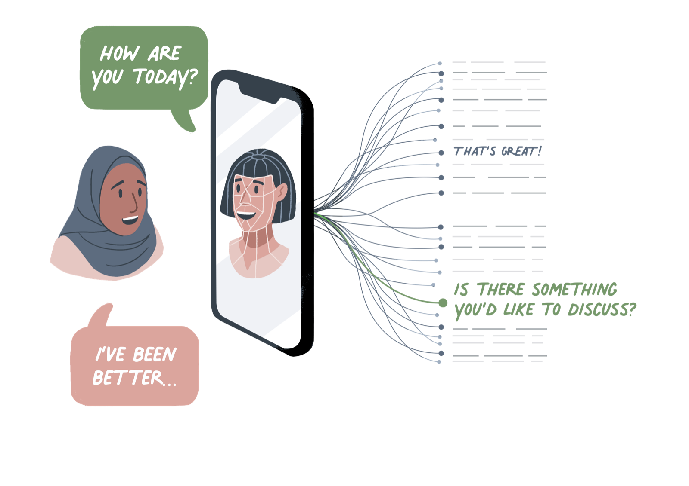

1 Introduction¶

Summary
This introduction serves to motivate the significance of some of the topics that will be explored throughout this guidebook. It starts by discussing the development of Prozac, as an illustrative example of how it can be challenging to anticipate the consequences of scientific research, before moving on to explore the concept of 'uncertainty'. Although some topics and concepts are introduced, they are not explored fully in this section.
Anticipating the consequences of scientific research and technological innovation can be an intricate and formidable task—one that is made all the more challenging when the target domain is a complex system such as the human brain or society.
In the early 1970s, a group of scientists working at Eli Lilly—a pharmaceutical company—were engaged in research that would go on to have profound effects on both of these complex systems. Primarily, the group were exploring the role of serotonin in depression, and their research led to the discovery of a drug known as fluoxetine hydrochloride, which affects the reuptake of serotonin in the brain [cite wong2005]. But the introduction of the drug also had a profound effect on society as it rapidly grew in popularity under its more common name, Prozac.
Prozac is a technology in the broad sense of the term, but it is not the sort of technology that this course guide will typically focus on. However, in spite of this, the discovery and development of Prozac is an interesting case to begin this guide with.
Unanticipated and Unintended Consequences¶
Although the scientists who were involved in the discovery and development of fluoxetine hydrochloride were confident that it could be used in the treatment of depression, the company Eli Lilly initially tested the drug as a treatment for high blood pressure and as an anti-obesity drug. Part of the reason for this was due to market analysis forecasting a limited demand for another antidepressant drug to rival the class of medications known as 'tricyclic antidepressants' that were already in use. So, as one of the discovers of Prozac admits,
Quote
"it would be presumptive to claim that we anticipated the wide acceptance of Prozac by both physicians and patients. Neither did we foresee that its pale-green and light-yellow capsule would appear on the cover of Newsweek (26 March 1990), which described it as: 'A breakthrough drug for depression'."
As we will see throughout this course, anticipating the effects of your research or innovation project is a core part of what it means to take responsibility. But the discovery of Prozac shows us that there are limits to anticipation, and that sometimes unintended consequences may arise. For instance, antidepressants such as Prozac have received a large amount of critical scrutiny that focuses on their over-prescription and overuse in society, which can often lead to alternative (non-pharmaceutical treatments) being overlooked; the patchy state of our empirical understanding regarding how they affect and alter an individual's brain; and the range of side effects, including nausea, headaches, difficulty sleeping, dizziness, fatigue, and even increased suicidal ideation—the very thing that the drugs are often prescribed to help alleviate [cite spence2013]. Should the developers of Prozac have anticipated these consequences? Does taking responsibility for research and innovation require researchers and innovators to have near-omniscient levels of anticipatory capabilities, in order to ensure no unintended consequences arise? Obviously, the answer is no. Any sensible moral theory that is intended to support practical decision-making must make room for the cognitive limitations of human individuals and teams, and we cannot ignore the many positive impacts that counteract the potentially negative and unintended consequences.
Returning to our example, it should be recognised that Prozac and its kin—a class of drugs called selective serotonin reuptake inhibitors (SSRIs)—have had a profound and positive impact on the lives of many people who suffer with depressive mood disorders. These positive (and intended) consequences can't be dismissed in any evaluation of the social and individual benefits of SSRIs. Let's take a look at some of these trade-offs as they pertain to the topic of RRI.
Dealing with Uncertainty¶
Perhaps the most important is the ongoing empirical uncertainty surrounding how antidepressants operate. Given the complexity of the brain and the relationship between an individual's mind and their culture and society, there is, unsurprisingly, a vast amount that is not known about the mechanisms and causal processes by which SSRIs operate. The rationale behind a lot of their use is that there is a typical (or, normal) level of serotonin reuptake and that depressive mood disorders are characterised by a deviation from this level—a homeostatic conception often referred to by the label 'chemical imbalance'. As such, SSRIs are intended to correct for this imbalance by returning (and holding) the levels to a set point. But, there are also a wide variety of other interventions that work for individuals, including cognitive behavioural therapy, herbal or dietary supplements (e.g., St John's Wort), sports and leisure activities, and also better sleep—something we could probably all benefit from.
In the course of assessing, diagnosing, and treating depression it is common for patients to be asked to evaluate whether the impact of their depression on their day-to-day activities and relationships is worse than the potential side effects of medication. This is a value-laden decision made under uncertainty, which cannot be made by the psychiatrist on behalf of their patient. Nor could it be fully accounted for in the initial course of developing the drug—individuals respond in a remarkably diverse number of ways to treatment. Rather, it can only be rationally decided on by the user of the treatment, following a process of informed consent and understanding.
This brings us to another significant aspect of RRI, which we will discuss in depth during later sections—reflecting on how a research or innovation project will impact upon the lives, rights, and freedoms of users or stakeholders must be a participatory activity that is inclusive of the users or stakeholders themselves. We can assume that the development and use of SSRIs was (and is) guided by noble and beneficent intentions to help people and improve public health outcomes. But as the well-known saying goes, 'the road to hell is paved with good intentions'.
Good intentions are not sufficient for acting responsibly. Let's look at an example. Cathy—a data scientist with an interest in machine learning—may believe that she is doing a good act by developing an automated system that uses natural language processing to secretly monitor the tweets or comments of her friends on social media and then alerts her if it detects negative language that could be indicative of depression or suicidal ideation. If it detects a message, it notifies Cathy so she can reach out to her friends and try to offer some help or support. But is she acting responsibly in doing so? Your immediate reaction is probably one of discomfort, leading you to think the answer to this question should be 'no'. Let's explore some of the relevant factors to see why this is likely the case.
An Example
First of all, you may think that in spite of the fact that Cathy may be trying to help, if she were to explain to her friend that she had reached out on the basis of an automated monitoring tool, they would probably feel as though she were violating an important expectation of trust by operating this tool in secrecy. Arguably, this is an outcome that she should have been able to anticipate had she reflected on the consequences of her project. Although Cathy's friend's messages and comments were made in public, they would have a reasonable expectation that Cathy would not use their posts or data for purposes that could be perceived as some form of surveillance. Had Cathy reached out to her friends and included them in her initial idea formation, they would probably have been able to save her a lot of wasted effort and prevented the unnecessary harms to their friendship.
Second, let's assume that Cathy has developed this tool and hosted the code on a public GitHub repository. Her intention is to allow others to help and support their friends in the same way, and is operating under the belief that by making her work open, accessible, and transparent—several principles that are commonly found in ethical frameworks—she is contributing to the public good. But what if the tool becomes incredibly popular and widely used? A possible unintended consequence of this is that many users of social media begin to feel unsafe posting on platforms that they had, hitherto, used for the purpose of seeking help and advice from a supportive community? Unfortunately, Cathy did not properly reflect on how these principles would operate within the context of her project, and falsely assumed they were unconditional goods.
Finally, let's pretend that Cathy has genuinely overlooked both of these consequences and, therefore, has made no plans for rectifying the potential harm her tool has caused. By now, she is unable to respond to the emergence of the unintended consequences except by apologising and removing the tool, which could have already been copied to other user's computers.
It should be clear that this example is a case of irresponsible technological innovation that gives rise to several socially undesirable outcomes and harms. However, what is not necessarily clear at present is that Cathy's project can also be seen to contravene several principles of RRI: anticipation, reflexivity, inclusiveness, and responsiveness.
We will explore these principles in more detail in a later section. However, this introduction has already indirectly introduced you to most of the themes, topics, and principles that are covered in this guide. In the remainder of the guide we will approach each of them in a more systematic and structured manner, taking time to discuss and explore how they can help you conduct more responsible research and innovation in data science and AI.